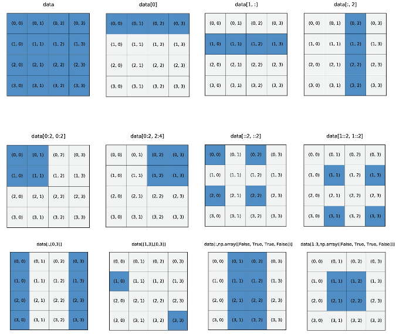

Programming Level-up
Lecture 4 – An Introduction to Numerical Computing in Python
Table of Contents
- 1. NumPy
- 1.1. What is NumPy
- 1.2. Working with NumPy
- 1.3. Indexing Arrays
- 1.4. Reshaping and Resizing
- 1.5. Arithmetic Operations
- 1.5.1. Arithmetic Operations
- 1.5.2. Arithmetic Operations
- 1.5.3. Broadcasting
- 1.5.4. Comparison with Functions
- 1.5.5. More complex operations
- 1.5.6. More complex operations
- 1.5.7. More complex operations
- 1.5.8. Vectorizing a function
- 1.5.9. Vectorize a function
- 1.5.10. Vectorize a function
- 1.5.11. Reading more
1. NumPy
1.1. What is NumPy
1.1.1. What is NumPy?
NumPy (https://numpy.org/) is one of the fundamental Python libraries for scientific computing. In essence, its aim is to make vector and array processing in Python much more efficient. Therefore, it would be your go-to for (numerical) data processing.
Numerical data processing with NumPy can, most often that not, be magnitudes faster than what you can write in Python, even if the operations are the same. This is because NumPy is partly written in C.
For example, if we want to compute the matrix multiplication of two arrays:
A = [[1, 4], [9, 5]] # 2 dimensional 'matrices' A and B B = [[1, 2], [3, 4]] C = [[0, 0], [0, 0]] # our result 'pre-allocated' with zeros for i in range(len(A)): for j in range(len(B)): for k in range(len(B)): C[i][j] += A[i][k] * B[k][j]
1.1.2. What is NumPy?
The previous example is quite un-weidly. We have to manually loop through the matrices and apply the computation for each element. This can be very slow in Python. NumPy provides a much cleaner and quicker interface:
import numpy as np A = np.array([[1, 4], [9, 5]]) B = np.array([[1, 2], [3, 4]]) C = A @ B # or np.matmul(A, B) print(C)
Results: # => [[13 18] # => [24 38]]
1.1.3. Install NumPy
Before we can use NumPy, we must first install it if its not already. NumPy can easily be installed with one of your package managers of choice. For example, if you want to install via conda:
conda install numpy
or with pip:
pip install numpy
1.1.4. Creating a numpy array
As we've seen previously, we use np.array to create a numpy array from a Python data type
A = np.array([[1, 2, 3], [4, 5, 6], [7, 8, 9]]) print(A)
Results: # => [[1 2 3] # => [4 5 6] # => [7 8 9]]
We've created a 3x3 matrix of integers. Note that, out-of-the-box, NumPy doesn't support ragged arrays (matrices that are not rectangular), so this will not work as you expect:
A = np.array([[1], [1, 2]])
1.2. Working with NumPy
1.2.1. Basic attributes
A numpy array has various attributes that are useful for our numerical computing. Some of these include:
A = np.array([[1, 4], [9, 5]]) print(A.shape) # the shape of the array print(A.size) # number of elements print(A.ndim) # number of dimensions print(A.nbytes) # storage used print(A.dtype) # data type of elements
Results: # => (2, 2) # => 4 # => 2 # => 32 # => int64
1.2.2. Different data types
In the previous example, the elements in the array we int64. But normally, we will
see float64. However, there are many other available data types, where each of the
different data types affects how much memory is used to represent the data.
- int (8, 16, 32, 64)
- uint (unsigned integers)
- bool
- float (8, 16, 32, 64)
- complex
https://numpy.org/doc/stable/user/basics.types.html https://numpy.org/doc/stable/reference/arrays.dtypes.html
1.2.3. Creating arrays with different dtypes
When creating a NumPy array, NumPy will select what it thinks to be the most
appropriate data type. However, we can tell NumPy explicitly what the data type
should be with the dtype argument.
A = np.array([[1, 2], [9, 5]], dtype=np.int8) print(A) print(A.dtype) A = np.array([[1, 2], [9, 5]], dtype=np.float) print(A) print(A.dtype)
Results: # => [[1 2] # => [9 5]] # => int8 # => [[1. 2.] # => [9. 5.]] # => float64
1.2.4. Different ways of creating arrays
NumPy also provides us with a number of different functions to create arrays. Instead of doing this:
A = np.array([[0, 0], [0, 0]])
We could instead use the np.zeros function, passing a tuple where each element of
the tuple describes how many elements should be made in each dimension:
A = np.zeros((2,)) # 1 dimensional A = np.zeros((2, 2)) # 2 dimensional A = np.zeros((2, 5, 5)) # 3 dimensional
1.2.5. Different ways of creating arrays
Another commonly used array creation function is the np.random.randn function. This
creates an array where elements are sampled from a normal distribution.
A = np.random.randn(2, 2) print(A)
Results: # => [[-0.68213848 -0.44274759] # => [ 0.6748596 0.64244208]]
Note the interface is a little different than .zeros, where instead of passing a
tuple, we pass multiple arguments to the function.
1.2.6. Different ways of creating arrays
It is also convenient to create arrays with ranges of elements.
A = np.arange(5, 10) # optional step print(A)
Results: # => [5 6 7 8 9]
A = np.linspace(5, 10, 20) print(A)
Results: # => [ 5. 5.26315789 5.52631579 5.78947368 6.05263158 6.31578947 # => 6.57894737 6.84210526 7.10526316 7.36842105 7.63157895 7.89473684 # => 8.15789474 8.42105263 8.68421053 8.94736842 9.21052632 9.47368421 # => 9.73684211 10. ]
1.2.7. Different ways of creating arrays
There are many more ways to create arrays. Some include:
np.ones- a matrix of 1'snp.eye- an identity matrixnp.diag- create a matrix with supplied elements across the diagonalnp.fromfunction- load elements from the return of a functionnp.fromfile- load elements from a data file
Though, the best resource for understanding is NumPy's own documentation on the subject: https://numpy.org/doc/stable/user/basics.creation.html
1.3. Indexing Arrays
1.3.1. Slicing NumPy arrays
In native Python, when we have a 'matrix' like data structure (just a list of lists), and we want to access a particular element from this matrix, we have to do something like:
A = [[1, 2], [3, 4]] print(A[1][0])
Results: # => 3
However, in NumPy, we seperate the indexes by comma:
A = np.array([[1, 2], [3, 4]]) print(A[1, 0])
Results: # => 3
1.3.2. Slicing NumPy Arrays
If we wanted to get all elements from the 2nd column we would use the : notation. For
example:
A = np.array([[1, 2], [3, 4]]) print(A[:, 1])
Results: # => [2 4]
Likewise, all elements from the 2nd row:
print(A[1, :])
Results: # => [3 4]
1.3.3. Slicing NumPy Arrays
Note that when we slice an array, we are not copying the elements:
A = np.array([[1, 2], [3, 4]]) b = A[:, 1] b[0] = 10 print(A)
Results: # => [[ 1 10] # => [ 3 4]]
Any modification you make to the b variable will also affect A. For that we must use
.copy()
A = np.array([[1, 2], [3, 4]]) b = A[:, 1].copy() ...
1.3.4. Slicing NumPy Arrays

Figure 1: Johansson, R., Johansson, R., & John, S. (2019). Numerical Python (Vol. 1). Apress.P
1.3.5. Boolean Indexing
NumPy arrays can also be composed of boolean elements
A = np.array([[1, -1], [0, 5]]) print(A > 0)
Results: # => [[ True False] # => [False True]]
And we can also use boolean elements to help with indexing:
values_above_zero = A[A > 0] print(values_above_zero)
Results: # => [1 5]
1.3.6. Boolean Indexing
Therefore we can apply computations to only part of the array using this indexing feature:
mask = A > 0 A[mask] = A[mask] + 10 print(A)
Results: # => [[11 -1] # => [ 0 15]]
1.4. Reshaping and Resizing
1.4.1. Reshape
After an array has been created, we can modify its structure/shape using various
functions. The first we shall look at is .reshape. For example, let us create a
vector of 4 elements and then reshape it into an array of 2x2 elements. Of course,
the new shape of the array must be proportional to the original number of elements:
2x2 elements = 4 elements.
A = np.arange(1, 5) mat_A = A.reshape(2, 2) print(mat_A) print(A) # A is not changed! No need for copy
Results: # => [[1 2] # => [3 4]] # => [1 2 3 4]
1.4.2. Flatten
If we wanted to take a 2d array and reshape it into a vector, we could of course use
the .reshape function again. But we could also use .flatten.
flat_A = mat_A.flatten() print(flat_A)
Results: # => [1 2 3 4]
1.4.3. Flatten
When specifying the new dimensionality of the reshaped array, -1 is a shortcut to
specify the dimensionality to allow reshaping to occur correctly. For example:
A = np.arange(1, 5) print(A) print(A.reshape(2, -1))
Results: # => [1 2 3 4] # => [[1 2] # => [3 4]]
We're telling NumPy to create an array with 2 elements on the 1st dimension, and then however many elements on the second dimension.
1.4.4. Add a dimension
We can add and remove dimensions using .expand_dims and .squeeze, respectively.
print(A) print(np.expand_dims(A, 1))
Results: # => [1 2 3 4] # => [[1] # => [2] # => [3] # => [4]]
We are taking a vector and adding a dimension. Note that we have to use
np.expand_dims passing the object we want to expand and not A.expand_dims.
1.4.5. Add a dimension
We can use an indexing trick with None to do the expansion in just the same way:
print(A) print(A[:, None])
Results: # => [1 2 3 4] # => [[1] # => [2] # => [3] # => [4]]
Where None indicates to NumPy where we want to add the new dimension.
1.4.6. Remove a dimension
If we want to instead remove a dimension, we can use .squeeze()
print(A[:, None].squeeze(1))
Results: # => [1 2 3 4]
We are removing the 2nd dimension, but note that the elements must be singletons. So you cannot squeeze a 2x2 array.
1.4.7. Matrix transpose
Another useful feature is the matrix transpose:
print(mat_A) print(mat_A.transpose())
Results: # => [[1 2] # => [3 4]] # => [[1 3] # => [2 4]]
or even:
print(mat_A.T)
Results: # => [[1 3] # => [2 4]]
1.4.8. Composing arrays
If we have multiple arrays we want to 'join' together, we can use np.hstack for
horizontally joining, or np.vstack for vertically joining arrays. Note the dimensions
must match in the direction your stacking.
A = np.array([1, 2, 3]) B = np.array([4, 5, 6]) print(np.hstack([A, B]))
Results: # => [1 2 3 4 5 6]
print(np.vstack([A, B]))
Results: # => [[1 2 3] # => [4 5 6]]
1.5. Arithmetic Operations
1.5.1. Arithmetic Operations
We have already seen some basic examples of arithmetic operations in NumPy. But its worth looking at these in detail.
One of the best reasons to use NumPy is that the computations are vectorized and can be broadcast. We'll see examples of what these mean.
A = np.array([1, 2, 3]) B = np.array([[1, 2, 3], [4, 5, 6]]) print(A * B)
Results: # => [[ 1 4 9] # => [ 4 10 18]]
We can perform vector and matrix arithmetic using Python's infix operators like +, *,
etc.
1.5.2. Arithmetic Operations
When we perform arithmetic operations, NumPy will convert the data into arrays for us. While this can help, its not best practice for vectors and matrices, for scalars it will be fine.
A = [1, 2, 3] print(A * B)
Results: # => [[ 1 4 9] # => [ 4 10 18]]
1.5.3. Broadcasting
When we are working with singletons or scalar values, NumPy will automatically perform the broadcasting for us. So for example, if we want to double each element of an array:
print(B * 2)
Results: # => [[ 2 4 6] # => [ 8 10 12]]
NumPy will automatically broadcast the scalar 2 to every element of the shape and
size of B.
1.5.4. Comparison with Functions
NumPy provides, in many cases, both infix and function operations.
| Operation | Infix | Function |
|---|---|---|
| Addition | + | np.add |
| Subtraction | - | np.subtract |
| Multiplication | * | np.multiply |
| Division | / | np.divide |
| Matrix Multiplication | @ | np.matmul |
| Power | ** | np.power |
| Cos/Tan/Sin | np.cos, np.tan, np.sin | |
| Square root | np.sqrt | |
| Exponential, Logarithm | np.exp, np.log |
1.5.5. More complex operations
There are a number of different operations one can perform on a matrix. Such as the dot product of two matrices:
A = np.array([1, 2]) B = np.array([[1, 2], [3, 4]]) print(np.dot(A, B))
Results: # => [ 7 10]
The inner product:
print(np.inner(A, B))
Results: # => [ 5 11]
1.5.6. More complex operations
One mystical function is the einsum function. This function can effectively replace
other functions like dot and inner but it takes some understanding on how it
works. einsum is the application of Einstein Summation, a succinct method of
describing the multiplication between matrices. Lets first look at an example of the outer product:
print(np.einsum('i,ij->j', A, B))
Results: # => [ 7 10]
Or the inner product:
print(np.einsum('j,ij->i', A, B))
Results: # => [ 5 11]
1.5.7. More complex operations
In einsum we are giving a letter for each dimension of each array we pass to the
function.
So with: 'i,ij->j' for the inner product of matrices A and B, we are saying that the
first dimension of A (its only dimension) is labelled i, while for B the dimensions
are labelled as i and j respectively. The labels that exist in both sequences are
summed over.
Einsum can take a little time to fully understand and appreciate, but it can be a very powerful function with a very succinct syntax.
https://www.youtube.com/watch?v=CLrTj7D2fLM - Khan Academy - Einstein Summation Convention
1.5.8. Vectorizing a function
Lets say you have some function that computes the square of a number:
def my_square(x): return x**2 print(my_square(4))
Results: # => 16
As the function is simple, it takes one argument and returns one argument, we can pass a NumPy array and will get the correct result.
A = np.arange(1, 10) print(my_square(A))
Results: # => [ 1 4 9 16 25 36 49 64 81]
1.5.9. Vectorize a function
However, if the function is more complicated, it will not work.
def myfunc(a, b): "Return a-b if a>b, otherwise return a+b" if a > b: return a - b else: return a + b print(myfunc(A, 2))
Results: # => Traceback (most recent call last): # => File "<stdin>", line 1, in <module> # => File "/tmp/pyqVNaN0", line 3, in <module> # => File "/tmp/babel-jHhWMz/python-nKlyRH", line 8, in <module> # => print(myfunc(A, 2)) # => File "/tmp/babel-jHhWMz/python-nKlyRH", line 3, in myfunc # => if a > b: # => ValueError: The truth value of an array with more than one element is ambiguous. Use a.any() or a.all()
1.5.10. Vectorize a function
To allow us to use this function over an array, we can use the np.vectorize function
to create a new function, which applies myfunc over each element.
vfunc = np.vectorize(myfunc) print(vfunc(A, 2))
Results: # => [3 4 1 2 3 4 5 6 7]
Here we pass the function we want to vectorize myfunc to the np.vectorize
function. The return of this function is another function!
1.5.11. Reading more
We've only scratched the surface of what NumPy can offer us! One of the best starting points for learning about NumPy is NumPy's own user guide on the web: https://numpy.org/doc/stable/user/index.html
- Linear Algebra tutorial https://numpy.org/doc/stable/user/tutorial-svd.html
- Boolean expressions https://numpy.org/doc/stable/reference/routines.logic.html
- Set operations https://numpy.org/doc/stable/reference/routines.set.html